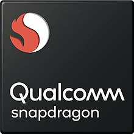

Les Snapdragon
Les Snapdragon
Qu'est-ce que Qualcomm ?
Qualcomm est une entreprise américaine active dans le domaine de la technologie mobile. Elle a été créé Irwin Mark Jacobs et Andrew Viterbi en 1989 au États-Unis. Elle est spécialisée dans la conception et la mise en place de solutions de télécommunications. Elle est devenue l'une des toutes premières entreprises mondiales dans son domaine, la conception et la commercialisation de processeurs pour téléphones portables. Qualcomm est une entreprise fabless (sans usine) et est également connue pour avoir développé la technique CDMA. Qualcomm conçoit, développe et commercialise des composants nécessaires à la réalisation de solutions de télécommunications. Ces composants sont pour l'essentiel des circuits intégrés et des logiciels embarqués. Qualcomm est spécialisé dans les systèmes sur une puce (System on a Chip ou SoC) centrés sur des CPU d'architecture ARM, dont le Snapdragon, ainsi que des prototypes de machines destinés aux constructeurs de terminaux de téléphonie mobile (smartphones), smartbooks et clients légers. Outre la technique Code division multiple access (CDMA), ils sont compatibles avec les techniques W-CDMA, LTE ou LTE Advanced, et plus généralement avec toutes les principales normes de la téléphonie mobile de troisième et quatrième générations, dites 3G et 4G ainsi que la cinquième génération, dites 5G depuis juin 2020. |
Qu'est-ce qu'un système sur puce ?Un système sur une puce, souvent désigné dans la littérature scientifique par le terme anglais « system on a chip » (d'où son abréviation SoC), est un système complet embarqué sur un seul circuit intégré ou « puce », pouvant comprendre de la mémoire, un ou plusieurs microprocesseurs, des périphériques d'interface, ou tout autre composant nécessaire à la réalisation de la fonction attendue. Il peut également comprendre de la logique, de la mémoire (statique, dynamique, flash, ROM, PROM, EPROM ou EEPROM), des dispositifs (capteurs) mécaniques, opto-électroniques, chimiques ou biologiques et des circuits radio. En résumé, les systèmes sur puce sont définis par le fait de concentrer plusieurs systèmes, plusieurs fonctionnalités sur une même puce electronique divers systèmes qui étaient présents dans des endroits séparés. Ce dispositif est poussé par l'arrivée d'une electronique qui se doit être plus en plus mobile et miniaturisé. En anglais, on appelle ces systèmes des "System On a Chip" ou encore "SoC". Les avantages sont nombreux : gain de place, vitesse de traitement dûe à la proximité. Voici un exemple de système sur puce, le Snapdragon de Qualcomm (MSM8225) : 
|
Que sont les Snapdragon ?Les Snapdragon sont une famille de système sur une puce (System on a Chip ou SoC) de la société Qualcomm utilisant le jeu d'instructions ARM. Les premiers, le QSD8650 et le QSD8250 sont créées en fin 2008 et petit à petit Qualcomm va développer et améliorer ces puces en sortant des nouvelles chaque années. Ils sont destinés au marché des smartphones et tablettes tactiles et sont disponibles pour Linux, Android, BlackBerry 10 (qnx), webOS, Windows Mobile, Windows Phone 7 et Windows Phone 8. Au premier trimestre 2021, Qualcomm était le plus important fabricant de processeurs pour smartphone avec 40% de part de marché devant MediaTek à 26% et Apple à 20%. Ces SoC sont équipés de GPU Adreno (anciennement Imageon), également développé par Qualcomm.  |
Les derniers Snapdragon
|
De quoi sont-ils composés ?
|
Qui les utilisent ?De nombreux téléphones Android possèdent donc le Snapdragon 8 Gen 1 et le Snapdragon 8+ Gen 1. Voici une liste des plus connu :
Et encore bien d'autres téléphones célébre et intéressant utilisent cette technologie de Qualcomm. |